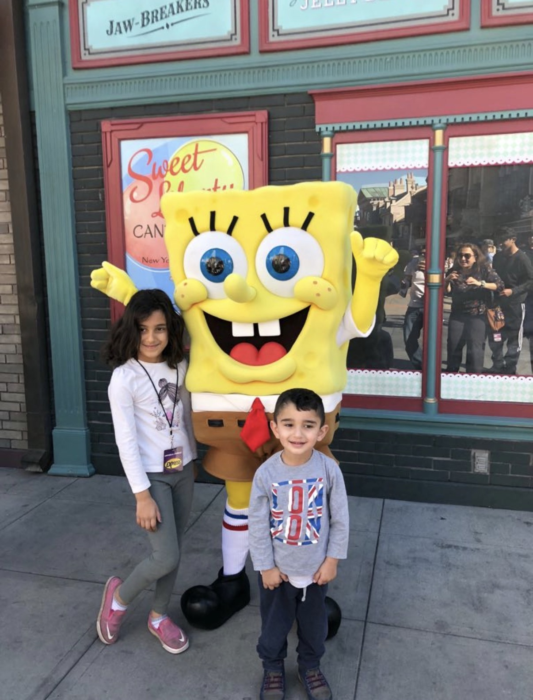
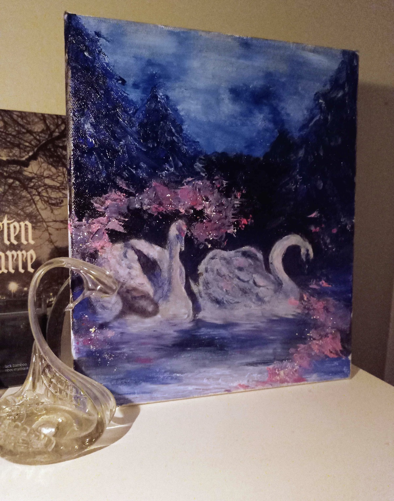

I want to take my artworks places in the future

My name is Haya Aljadery, and I was born and raised in San Diego, California. I am the second youngest of four, so growing up my house was very loud and full of energy. My parents are both very hardworking, my mom works at a school and my dad is a pediatrician, and they have always been strong role models for me. I grew up in a busy home with my three siblings, my parents, and my grandma, which made my childhood very lively and memorable. Growing up in San Diego was always something very special to me, I remember staying up late nights with my mom tuning into the San Diego News Channel.

One of my current interests is drawing and painting. I started drawing and painting from a really young age and it has always been a way to express myself creatively and relax. My favorite mediums to use are alcohol markers and colored pencils. Over the years, my parents have enrolled me in many art classes, which helped me improve a lot over the years. I plan to continue drawing in the future, and maybe even enter my artwork in competitions and shows. A good tool I have used in the past to help me improve my art is watching Youtube videos such as this helpful sketching tips video.
In the future, I want to keep growing both academically and personally. I hope to do better in school and go to college majoring in a healthcare related field. I want to learn how to depend on myself more and hold myself accountable for more things. I hope to take my art places as well, submitting pieces into shows and galleries such as this local art gallery in San Diego. Another goal of mine is to travel more as well, learning about new cultures and meeting new people across the planet.